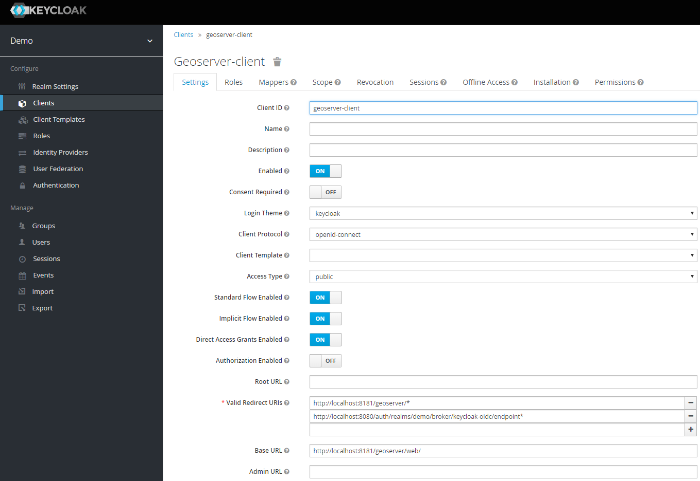
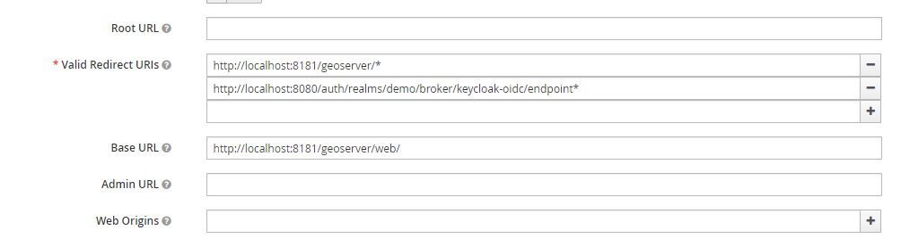
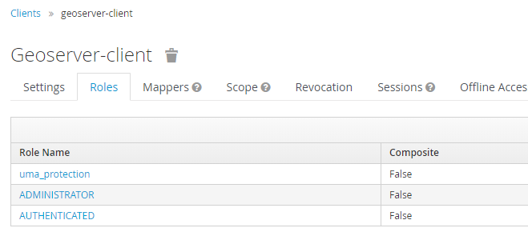
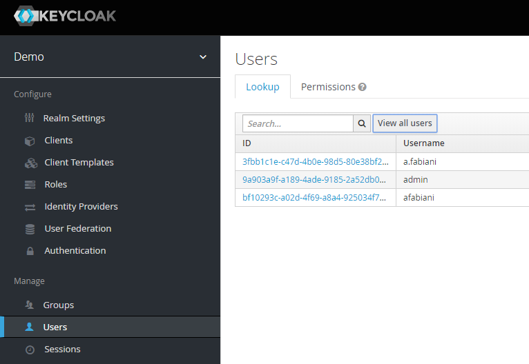
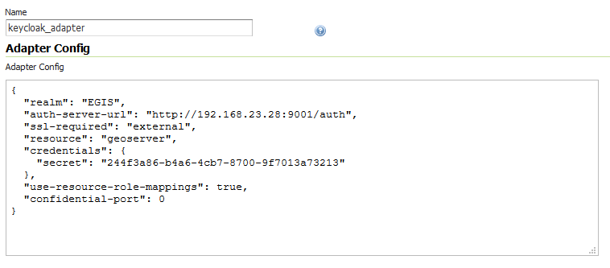

Authentication with Keycloak¶
This tutorial introduces GeoServer Keycloak support and walks through the process of setting up authentication against an Keycloak provider. It is recommended that the Authentication chain section be read before proceeding.
The GeoServer Keycloak-authn/authz plugin will allow you to use an instance of Keycloak to control access to resources within GeoServer.
Installation Instructions¶
As the Keycloak Admin:
Note
In this example the Keycloak service runs on port 8080 while GeoServer runs on port 8181
Create a new client for GeoServer named geoserver-client.
Make sure to add the base URL of GeoServer to the list of acceptable redirect paths, and add also the Keycloak OIDC endpoint base URI.
- eg:
- 
Set the access-type of client as appropriate. If your GeoServer instance is depending on another service for authentication (eg: NGINX auth plugin) then you should probably select bearer-only. Otherwise, you should probably select confidential.

Add the the ADMINISTRATOR and AUTHENTICATED client-role to the geoserver-client in Keycloak.
In this phase you will need to map GeoServer Roles to the geoserver-client ones in Keycloak.
Use the AUTHENTICATED one for generic users. Assign this role ADMINISTRATOR to the users/groups who should have administrative access to GeoServer.

Obtain the installation-configuration for the geoserver-client in JSON, and provide this to the GeoServer Admin for the next steps.

As the GeoServer Admin:
Note
In this example the Keycloak service runs on port 8080 while GeoServer runs on port 8181
Under the Authentication UI, add a new authentication-filter. Select Keycloak from the list of provided options, and name your new filter keycloak_adapter. Paste the installation-configuration from the Keycloak-server in the text area provided.
If not present, be sure to add the following options before clicking Save:
"use-resource-role-mappings": true
Add the keycloak_adapter to the web filter-chain if you want to protect the Admin GUI, as an instance. If you want to be redirected everytime to Keycloak, then remove all of the others chain filters (basic, form, rememberme, anonymous), otherwise you will need to access directly the login url on Keycloak.

Check your work so far by navigating to the GeoServer UI. You should be redirected to the Keycloak login-page, and after logging-in you should be redirected back to the actual GUI page.

You should verify that the message logged in as <USERNAME> is posted in the top right corner before continuing.

Warning
Workaround in the event of a 403 unauthorized response after logging-in.
Enforce the algorithm RS256 in the keycloak client.
Copy the public key for the RS256 algorithm from the Realm Settings into the adapter config as:
"realm-public-key": XXXXXXX